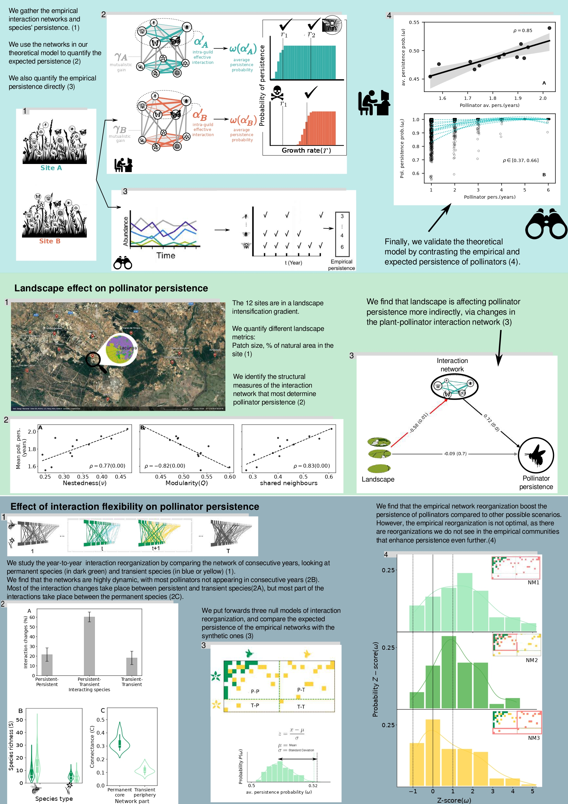
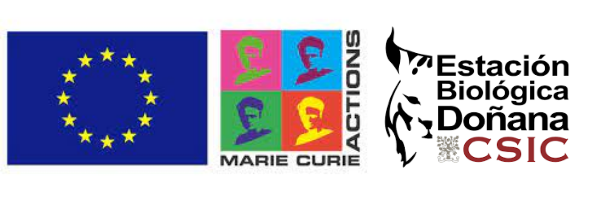

Research project · 2022 — 2024
Species and ecological interactions are disappearing at alarming rates with unknown effects on key ecosystem functions basic for human well being, such as pollination. This projects aims to address one of the most relevant problems in ecology nowadays: how plant-pollinator communities respond to environmental changes. By bridging the classical divide between the empirical and theoretical frameworks to study ecological stability, and using as case study detailed data on 12 communities in the Doñana natural reserve (southern Spain) across a gradient of landscape fragmentation monitored over seven years, this project will put forwards solutions to comprehensively quantify the response of pollination communities to environmental perturbations, and elucidate the mechanisms by which pollination communities withstand global change pressures and achieve different axes of stability.
Research is divided in three Work packages, through which we will advance towards a more comprehensive quantification of stability in plant pollinator communities:
WP1 aims to characterise and quantify the stability of the empirical communities under study.
WP2 centres on the validation of mechanistic approaches: first measuring stability in model plant-pollinator communities, and then comparing it with the stability of empirical communities.
WP3 deals with Interaction structure and its consequences for stability. We will study it in two ways: first by looking at the effect of landscape fragmentation on stability, and then on the effect that the dynamical nature of the interactions has on the stability of the plant-pollinator communities.
For the duration of the project I will be working inside the Bartomeus Lab in Doñana Biológical Station, Seville.
This project is funded by the MSCA program of the European Commission.
As project PoliS comes to an end, here is a graphical summary of the more relevant things we have learned during the 24th month of the action.

More information on the invertebrate bioblitz in Tablada, part of this project's public engagement, is available on its event webpage.
